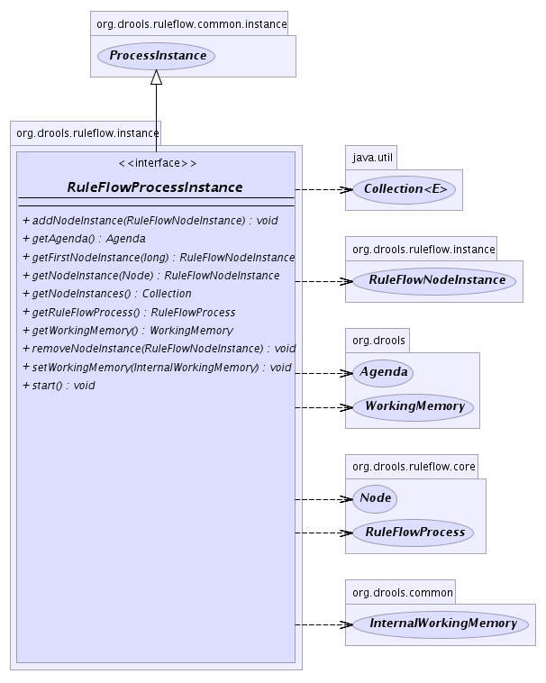

org.drools.ruleflow.instance
Interface RuleFlowProcessInstance
- All Superinterfaces:
- ProcessInstance, java.io.Serializable
- All Known Implementing Classes:
- RuleFlowProcessInstanceImpl
public interface RuleFlowProcessInstance
- extends ProcessInstance
A process instance for a RuleFlow process.
Contains a reference to all its node instances, and the agenda that
is controlling the RuleFlow process.
-
- 
getRuleFlowProcess
RuleFlowProcess getRuleFlowProcess()
addNodeInstance
void addNodeInstance(RuleFlowNodeInstance nodeInstance)
removeNodeInstance
void removeNodeInstance(RuleFlowNodeInstance nodeInstance)
getNodeInstances
java.util.Collection getNodeInstances()
getFirstNodeInstance
RuleFlowNodeInstance getFirstNodeInstance(long nodeId)
setWorkingMemory
void setWorkingMemory(InternalWorkingMemory workingMemory)
getWorkingMemory
WorkingMemory getWorkingMemory()
getAgenda
Agenda getAgenda()
getNodeInstance
RuleFlowNodeInstance getNodeInstance(Node node)
start
void start()